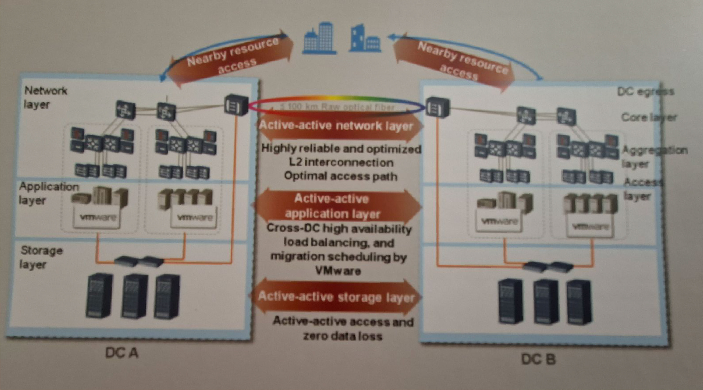
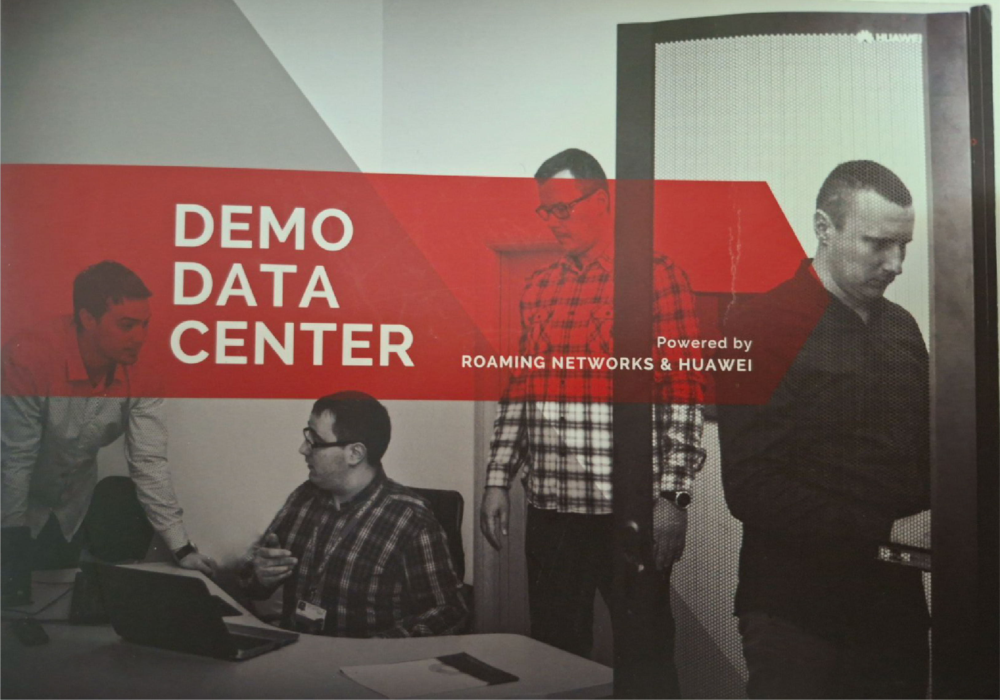
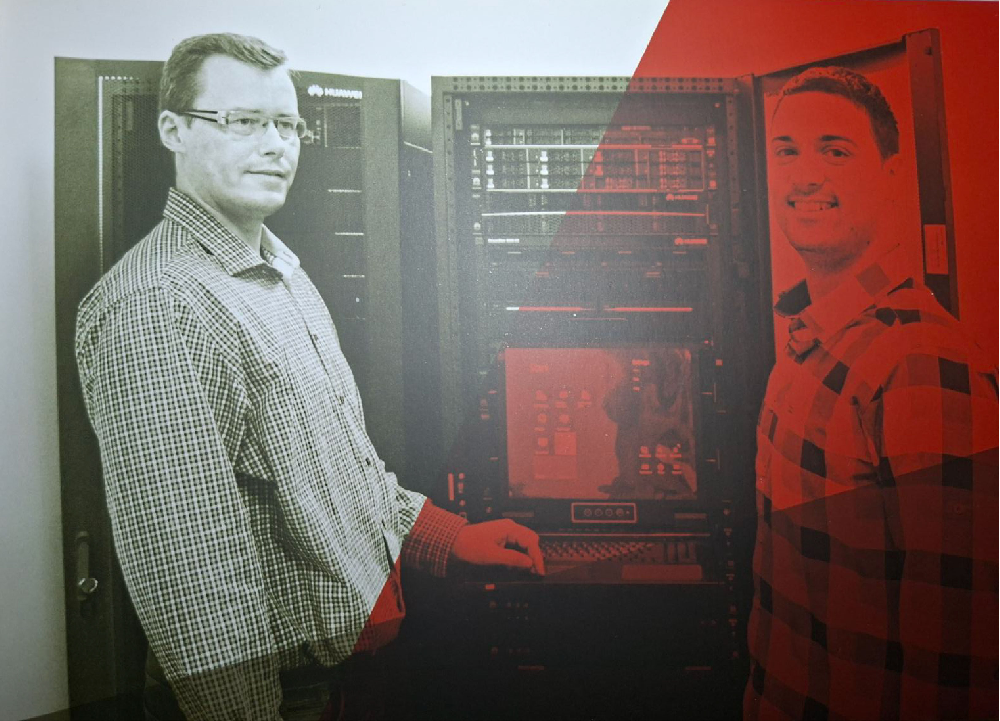
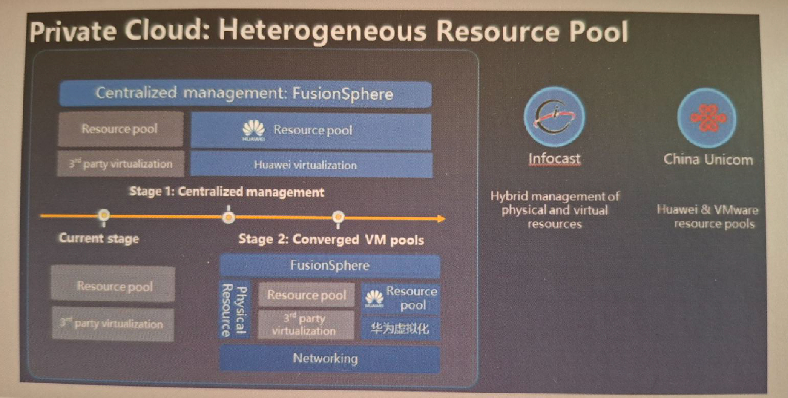
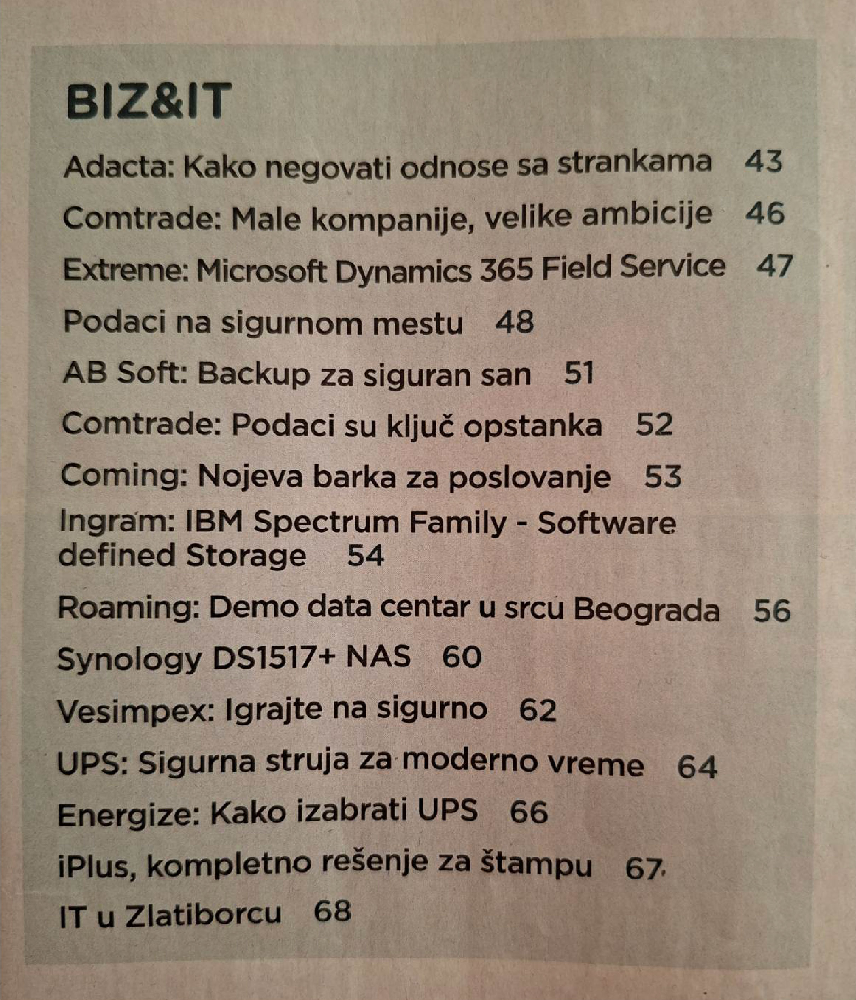

Customer Demonstrations
Present complete enterprise solutions in a live environment rather than through isolated product presentations.
An end-to-end enterprise demonstration environment created to turn infrastructure concepts into real, working customer scenarios across private cloud, virtualization, storage, networking, security and business continuity.
The Huawei Demo Data Center was created as a dedicated enterprise technology environment for customer demonstrations, technical workshops and solution validation.
Instead of presenting infrastructure only through slides and product specifications, the platform allowed customers to see integrated technologies operating together in practical data center scenarios. The environment covered private cloud, virtualization, storage, networking, security, infrastructure management, backup and disaster recovery.
The goal was not to build a single-purpose vendor showcase, but a flexible presales platform that could support different customer requirements and architectural approaches.
The Demo Data Center was designed to support customer workshops, presales engagements and architecture discussions with a practical environment that could be adapted to different enterprise scenarios.
Present complete enterprise solutions in a live environment rather than through isolated product presentations.
Create a platform where architecture options, integration scenarios and customer requirements could be discussed and demonstrated.
Test and demonstrate infrastructure, virtualization, storage, networking, security and business continuity scenarios before production projects.
Huawei FusionSphere-based private cloud and virtualization scenarios with centralized resource management.
Multiple infrastructure approaches were represented, including VMware/vSAN, Microsoft Hyper-V and Huawei virtualization.
Both rack and blade server architectures were included to support different customer requirements and design models.
Enterprise storage, SAN and converged infrastructure scenarios, including block and virtualized storage use cases.
Backup, replication and disaster recovery demonstrations, including multi-site and active-active architecture concepts.
Centralized monitoring and management of servers, storage, networking and other enterprise infrastructure components.
Data center switching, routing and enterprise security technologies integrated into end-to-end demonstration scenarios.
Enterprise WLAN and access technologies as part of the wider infrastructure portfolio demonstrated to customers.
A key design principle was to make the Demo Data Center useful for more than one technology stack. For the 2017 technology landscape, the environment was structured to demonstrate alternative virtualization and infrastructure approaches, including VMware/vSAN, Microsoft Hyper-V and Huawei FusionSphere.
Both rack and blade server models were represented, while storage, SAN, networking, security and backup technologies could be combined into different customer scenarios. This made the environment particularly useful during presales workshops because discussions could move from product features to architecture and business requirements.

I led the Huawei Demo Data Center project from early concept definition and architecture design through implementation, technical positioning and customer-facing presentation.
The initial business idea was supported by Roaming Networks leadership, while I was responsible for shaping it into a practical enterprise demonstration platform. As the manager responsible for the sector and the overall project, my work covered solution concept, technology selection, architecture, coordination of implementation activities and the way the environment would be presented to customers and partners.
One of my key contributions was the decision to avoid a narrow, single-platform demonstration. The environment was deliberately structured to show multiple virtualization and infrastructure models relevant at the time, as well as rack and blade server architectures. Colleagues, especially Aleksandar and Bojan supported the implementation, while I retained overall responsibility for the project and its technical direction.
Selected photographs and documentation from the original project archive.



The Demo Data Center was featured in PC Press, issue #246 from September 2017, in the article:
“Roaming: Demo data centar u srcu Beograda”
The original table of contents lists the feature on page 58.

The Demo Data Center strengthened the ability to demonstrate complex enterprise solutions in a practical and credible way. It provided a reusable environment for workshops, technology validation and customer discussions across a broad range of data center technologies, while supporting the company’s positioning in enterprise infrastructure and private cloud projects.